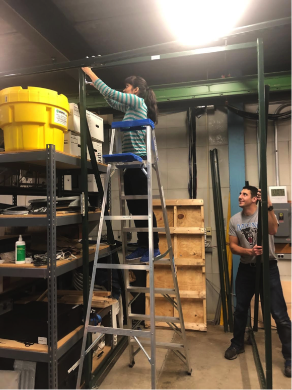

Side Guard Trebuchet
A crash-dummy launching trebuchet to demonstrate the need for truck side guards
Background
In partnership with the Volpe National Transportation Systems Center, Mark Endrezzi and I built a trebuchet capable of launching a child an adult mannequin at walking and running speeds at a moving truck
The purpose of this project was to demonstrate how installing side guards on trucks can save the lives of vulnerable road users like pedestrians and bicylcists.
Construction and Design
The trebuchet was built out of Unistrut metal strips at the Volpe Center. Modeling the swinging adult crash dummy as a pendulum, we were able to determine the optimal distance and height to swing the dummy so that it collided with the side of the truck feet first and average walking and running speeds.